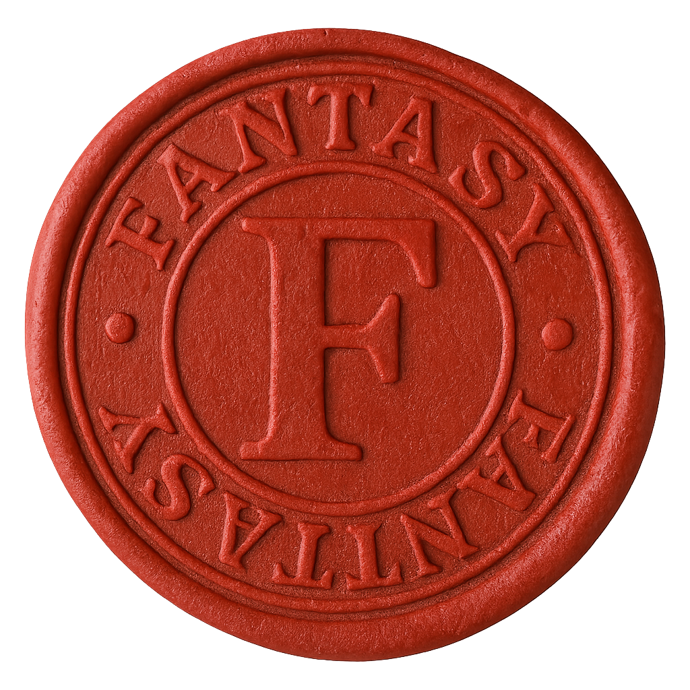

O que mais você idealiza para seu futuro? Quando pensamos no futuro muitos fazem planos, traçam metas, idealizam seus sonhos… alguns até escrevem seu plano de vida… Mas ninguém estava de fato preparado para o que ia acontecer naquele fatídico ano novo. Era réveillon no mundo todo!!! Todos comemorando e então ela veio… a doença… o grande mal que fez todos entrarem em estado de hibernação forçado. Muitos morreram naquele dia… aviões e helicópteros caindo, carros colidindo com força uns contra os outros, trens descarrilhando. Até as barragens se romperam e a água varreu tudo o que viu pela frente. Relatos começaram a chegar de toda parte do planeta de pessoas adormecendo do nada e não acordando mais… e então o fim veio.
Isso foi a mais de 100 anos atrás… foi então que o recomeço deu uma centelha de esperança para cada um de nós. Os primeiros despertos começaram a se levantar só para testemunhar o caos e o que havia restado da nossa civilização. Eles organizaram cidadelas e começaram a reunir os adormecidos em câmeras que chamamos de “ninho”. Ali monitoramos eles para ver no que vão se transformar. Isso mesmo, você leu certo, transformar. Muitos durante o estado de hibernação começaram a sofrer mutações em seus corpos e se tornaram criaturas que antes só existiam em filmes e jogos de videogame, como nessas histórias de apocalipse. Alguns acordaram para descobrir que haviam se tornado criaturas às vezes dotadas de inteligência, às vezes não. Outros ainda mantinham sua humanidade intacta, esses nós chamamos de Os Originais. Mas ainda outros, muito poucos mesmo, acordam com um dom… aqueles dotados de habilidades especiais para sentir a presença hostil do perigo e caçar essas criaturas que ameaçam nossa nova ordem. Esses bem poucos, nós chamamos de Bentos. Pessoas que foram tocadas pela luz de uma forma especial. Eles conseguem sentir o cheiro das criaturas tocadas pela escuridão a quilômetros de distância, seus olhos brilham como uma brasa acesa quando estão em fúria lutando contra essas criaturas e seu sangue é como ácido na pele das criaturas das trevas.
No começo tudo parecia estar se organizando, nos protegemos em refúgios murados ou em cavernas e mantínhamos as criaturas longe o mais tempo possível para que os Bentos pudessem matá-las. Assim surgiram as 3 principais cidadelas:
Candeia, o último refúgio dos humanos e seus aliados. Uma cidadela escondida sob toneladas de rocha, alimentada por um rio que garante suprimento de água. Os suprimentos chegam trazidos por comboios guiados e protegidos pelos Riders, patrulheiros das estradas que dedicam sua vida a buscar as ruínas e escombros em busca de suprimentos e medicamentos. A cidadela é liderada por Padre Lorian, ele fala como quem confessa ao próprio túmulo resignado, ciente de que a fé é tudo o que resta quando o mundo esquece de orar. Mesmo amargo, ainda oferece bênçãos aos que partem, sabendo que nenhum deles retornará ileso da luz que se apaga.
Altharion, A cidade do Espelho se formou em volta do Ordem da Chama Eterna, onde eles adoram uma relíquia e dizem serem os únicos filhos da luz genuína. E por conta desse fanatismo caçam e matam todos os Bentos que não pertencem ao culto deles, acusando-os de serem hereges. A cidade é governada por Kael Voryn. Kael Voryn prega uma fé sem piedade. Crê ser a própria encarnação da luz e que todo brilho diferente do seu é heresia. Enérgico e terrível, lidera a Ordem da Chama Eterna com fervor messiânico, convencido de que a salvação exige sacrifício.
E por último o Templo Submerso de Elyndor, é um antigo templo, originalmente dedicado aos deuses da luz e da purificação. A arquitetura é monumental, cheia de símbolos solares corroídos pela escuridão.Cada visitante é testado por provas de fé e coragem; ilusões e armadilhas protegem o local. Governado pela guardião abissal, entidade híbrida anjo/demônio criada para proteger a essência da luz.
Mas aí veio a profecia. O primeiro a se virar contra a ordem dos Bentos, ele se tornou o primeiro caído, nome que damos para os Bentos que se deixam corromper pelas trevas. Ele adotou o nome de Vhar’Zul, a consciência do abismo e diz falar em nome de Abyron, a escuridão encarnada. Sob as promessas de poder e conquistas, muitos se deixaram seduzir por Abyron e seu general Vha’Zul. As criaturas das trevas começaram a se organizar sob o estandarte deles e muitos Bentos e até alguns filhos dos Celestiais quebraram seu juramento e fizeram das trevas sua morada. Foi quando ela também despertou… Aurelya a deusa nascida da luz e fez dos Bentos seus guardiões, e assim a guerra se iniciou, Luz e Trevas guerreando e o lado vencedor iria mergulhar o que restou da humanidade em sua essência.
Esse é um breve resumo do que aconteceu, desperto. Agora que você acordou saiba que suas decisões vão definir quem você é. E não se engane… aprenda que nem toda luz é boa e também nem toda escuridão é maligna, são suas escolhas quem definem quem você é.

Todas as informacoes presentes aqui
podem ser usadas durante o Roleplay